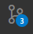
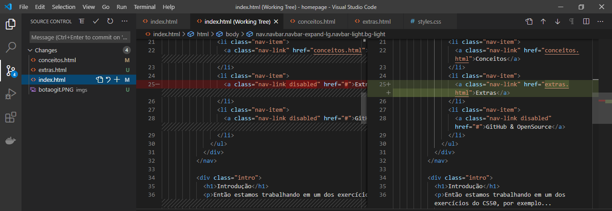

| Comando | Descrição |
|---|---|
git init<directory> |
Cria repositório vazio |
git clone <repo> |
Clona (copia) repositório |
git add <directory> |
Adiciona arquivos para o commit |
git commit -m "<message>" |
Persiste as alterações no repositório de versão |
git log "<message>" |
Exibe um histórico de commits |
git diff"<message>" |
Exibe um comparativo de arquivos que estão/foram alterados |
git branch"<message>" |
Lista todas as branches. |
git checkout -b <branch> |
Cria uma nova branch com nome desejado |
git merge -b <branch> |
Faz um merge para a branch desejada |
git pull |
Pega as alterações que estão no repositório remoto |
git push |
Envia as alterações comittadas |
Apesar do git te dar uma gama de comandos suficientes para manusear o repositório, você pode utilizar de ferramentas gráficas para realizar as alterações e entender melhor.
No VSCode você vai encontrar a aba "Source Control" no botão:
E ao clicar no botão , você pode visualizar as alterações e realizar todas as ações vistas acima(Commit, push e pull)
Você pode baixar o GitLens Aqui ou pelo marketplace do VSCode.